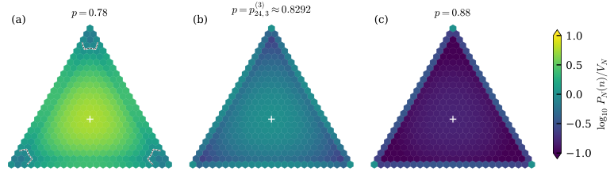

Many exact identities and finite bounds (exact law, balancing, ordering of constants a_k) are formalized in Lean 4, with a public repository mapping statements to theorems.
Abstract
We observe a ball bouncing down a Galton board with any number of directions. At each peg it either keeps its direction with some fixed probability or randomly turns to one of the other directions. Its bin measures how often it went each way, a point of a simplex. When the ball rarely turns, the most likely bins are the corners, which only a ball that never turns can reach. We ask when the best bin of each face of the simplex becomes as likely as a corner. To first order every face catches up at the same moment. We break this tie at second order, with an explicit constant for each face. Hence on a long board, as the expected number of turns grows to any fixed multiple of the length's logarithm, the most likely bin jumps once, from the corners straight to the center. A nonuniform start or a weak external field changes the constants, potentially allowing an intermediate face to win.
Problem
A ball on a Galton board with d directions keeps its direction with probability p or turns uniformly to another direction. Its bin is a point of a simplex. The question, from Kagey's Problem 131, is when the most likely bin of each face of the simplex becomes as likely as a corner.
Approach
Three exact forms of the occupation law are derived: run, refresh and ratio forms, the last obtained via a generating function. Asymptotics in the window T = L - (1/2)log L + t, with T = N(1-p)/(d-1) and L = log N, use Bessel and Laguerre approximations. These separate the faces at second order through explicit constants a_k. The analysis is then extended to nonuniform starts, weak Potts fields and bins near the simplex boundary. Exact identities and finite bounds are formalized in Lean 4, and Python scripts check the numerics.
Results
To first order every face ties with the vertices at T ≈ L. At second order the constants satisfy a_2 > a_3 > ..., so the most likely bin jumps once, from the corners straight to the center. A nonuniform start or a weak external field changes the constants and can let an intermediate face win. The asymptotic and nonuniform-start results were not formalized.

Figure 1: The ratio P_{N}(n)/V_{N} for d=3 and N=24 , one hexagon per bin, on a \log_{10} scale. (a) At p=0.78 only the 21 bins inside the dashed curves near the vertices are below the vertex height. (b) At the full-center crossing p^{(3)}_{24,3}=0.82921\ldots the center (8,8,8) (cross) ties with the vertices and every other bin is below them. (c) At p=0.88 every nonvertex bin is below the vertex